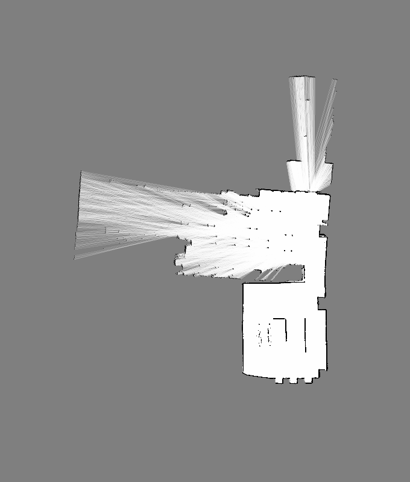

MapPlannerは、マップ画像から2点間の最短経路を計算するC++のデモプログラムである。実質的には、マップを表現するMapPlaneクラス、 最短経路を探索するPathFinderクラスの2つからなる。また、PPM形式の画像の読み書きを実装したPPMクラスがおまけとして付いてくる。
マップは基本的に2次元画像であり、各ピクセルは0～255の値を持つ。白い（値が大きい）ピクセルは移動可能であることを示し、黒い（値が小さい）ピクセ ルは移動不可能であることを示す。下の画像はマップの例であり、黒いピクセルはLRFで観測した障害物、白いピクセルはLRFで観測した障害物のない領域、灰 色は未観測領域を示す。
| int width | マップの幅。単位はピクセル。 |
| int height | マップの高さ。単位はピクセル。 |
| int threshold | 各ピクセルを「移動可能」「移動不可能」に分けたときの閾値。閾値が設定されていない場合には-1になる。マップ作成時には閾値は設定されて おらず、mask_brigher(), mask_darker()メソッドを呼んだ時点で閾値が設定される。 |
| MapPlane(int w, int h) | 幅w、高さhのマップを生成する。ピクセルの値は初期化されない。 |
| MapPlane(MapPlane& map) | 既存のマップをコピーして新たなマップを生成する。 |
| MapPlane(MapPlane* map) | 既存のマップをコピーして新たなマップを生成する。 |
| MapPlane(PPM& ppm) | PPM形式画像からマップを生成する。カラー画像の場合には、Rプレーンだけからピクセル値を取得する。 |
| uint8_t get(int x, int y) | (x,y)のピクセル値を取得する。(x,y)がマップの範囲外であった場合には例外を投げる。 |
| void set(int x, int y, uint8_t value) | (x,y)のピクセル値を value にする。(x,y)がマップの範囲外であった場合には例外を投げる。 |
| bool is_bright(int x, int y, uint8_t value) | (x,y)のピクセル値がvalue より明るいかどうかを判定する。明るい場合はtrueを返す。 |
| bool is_bright(int x, int y) | (x,y)のピクセル値が設定してある閾値（メンバ変数threshold）より明るいか どうかを判定する。明るい場合はtrueを返す。 |
| MapPlane* mask_brighter(int length, uint8_t threshold) | 元のマップに対して、明るい点の周辺length×lengthの正方形領域を「明るい」点に設定した新たなマップを返す。ここで指定した閾 値が、新たなマップの変数thresholdに設定される。 |
| MapPlane* mask_darker(int length, uint8_t threshold) | 元のマップに対して、暗い点の周辺length×lengthの正方形領域を「暗い」点に設定した新たなマップを返す。ここで指定した閾値 が、新たなマップの変数thresholdに設定される。 |
| PPM* toPPM() | マップをPPM形式画像に変換し、その画像を返す。 |
| PathFinder(MapPlane* map) | マップからPathFinderインスタンスを生成する。 |
| std::vector<PathFinder::Position>& find(int x1, int y1, int x2, int y2) | (x1, y1)から(x2, y2)への最短経路を計算する。計算された最短経路は、PathFinder::Position型のvectorとして帰ってくる。 PathFinder::Position型 は、xとyの2つのメンバ変数を持つ単純な構造体である。始点または終点の座標が移動可能（明るいピクセル）でなかった場合には例外を投げる。ま た、始点と終点がそれぞれ属する領域が連結でない（経路がない）場合にも例外を投げる。 |
| std::vector<PathFinder::Position>& makeLines(std::vector<PathFinder::Position>& path) | find()が返す経路は１ピクセルごとの座標列であるが、makeLines()はその座標列を引数とし、できるだけ数の少ない直線列にまとめたうえ、直線の端点列を返す。 |
| static const PPM::pixel BLACK, RED, GREEN, YELLOW, BLUE, MAGENTA, CYAN, WHITE | それぞれの色のピクセルを表現する定数。 |
| PPM(int width, int height) | 幅と高さを指定してPPM画像を生成する。 |
| PPM(PPM& ppm) | 他のPPM画像からPPM画像を生成する。 |
| PPM* create(const char *filename) | ファイルからPPM画像を読み込む。ファイルが存在しない場合、ファイル形式が異常な場合 な どの場合は例外を投げる。 |
| int Width() | 画像の幅をピクセル単位で返す。 |
| int Height() | 画像の高さをピクセル単位で返す。 |
| pixel& point(int x, int y) | (x,y)のピクセルへの参照を返す。 |
| void write(const char *filename) | ファイルにPPM画像を書きだす。 |
| void drawLine(int x1, int y1, int x2, int y2, pixel pix) | (x1,y1)から(x2,y2)までの直線上のピクセル値をpixにセットする。 |
| uint8_t pix[3] | R, G, B各色の値を保持する。 |